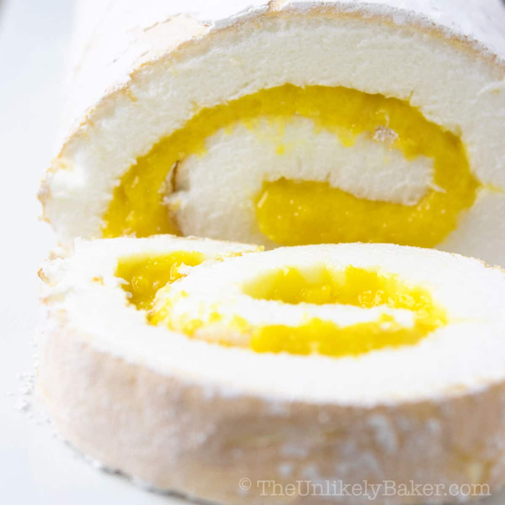
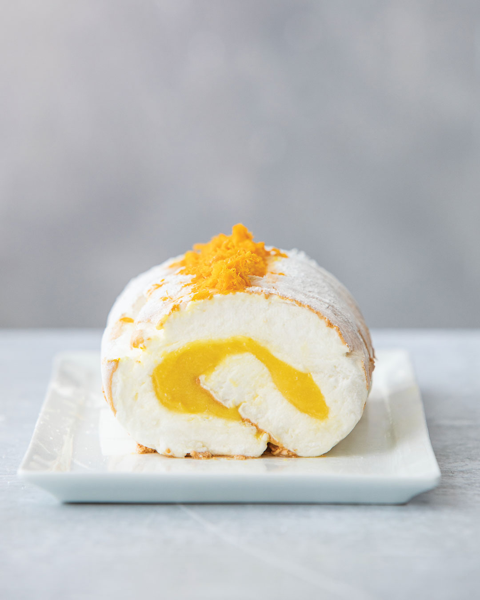
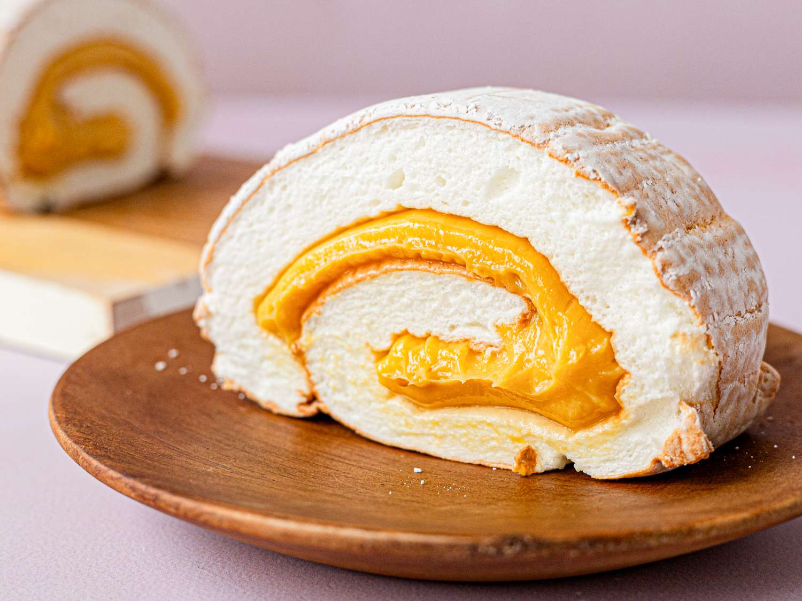
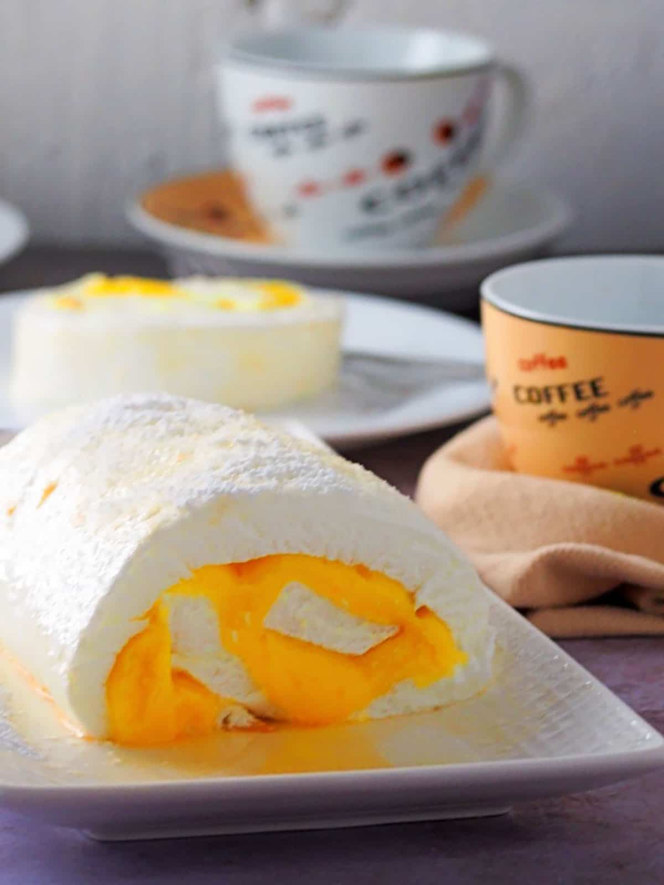

Brazo De Mercedez





History
Ang Brazo de Mercedes ay isang classic Filipino dessert na may roots noong panahon ng Spanish colonization sa Pilipinas. Ang pangalan nito ay nangangahulugang “Arm of Mercedes” sa Spanish, at pinaniniwalaang ipinangalan sa isang Spanish noblewoman o symbolic figure noon. Nabuo ito sa panahon na maraming egg yolks ang ginagamit sa paggawa ng bricks at construction materials, kaya ang mga natitirang egg whites ay ginamit naman sa kusina—dito nagsimula ang meringue-based desserts tulad ng Brazo de Mercedes. Sa paglipas ng panahon, pinagsama ang soft meringue roll at rich custard filling na gawa sa egg yolks at condensed milk, kaya naging signature texture at lasa nito. Hanggang ngayon, isa ito sa mga pinaka-iconic na Filipino desserts, na nagpapakita ng creativity at resourcefulness ng mga Pilipino sa pagluluto.
Ingredients & Notes
Egg whites (for meringue)
Sugar
Cream of tartar
Egg yolks
Condensed milk
Vanilla extract
Price
₱20